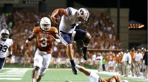

BYU football has a genuinely great history — legendary quarterbacks, big wins, and a fanbase that shows up no matter what. This is my attempt to document the best of it.
Few programs have a quarterback tradition like BYU's. Different eras, different styles — but defenses never had an answer for any of them.
BYU football hits different — great tradition, a unique place in college football history, and an offense that's always been fun to watch. The big upsets, the quarterbacks, the packed stadium in Provo. It just always feels like something's at stake.
Few things beat a packed BYU game where something happens that you'll be talking about for the next decade.

2 games. 393 rushing yards. 310 passing yards. 6 rushing touchdowns. Domination.
This Tableau visualization highlights the history and tradition of BYU football.